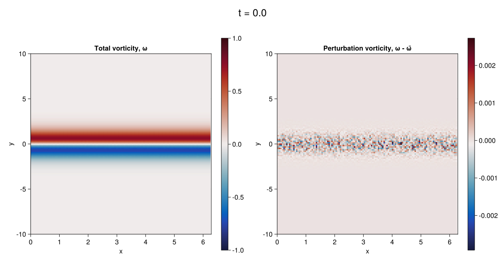
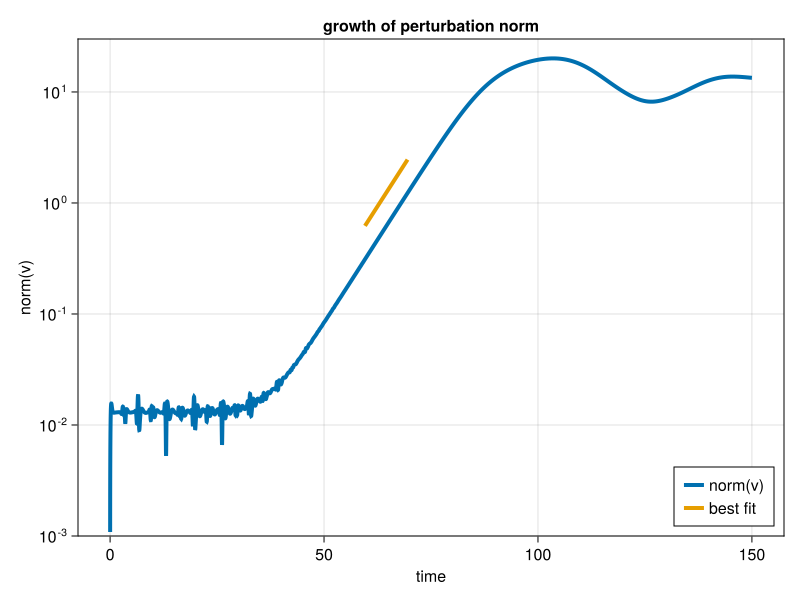

An unstable Bickley jet in Shallow Water model
This example uses Oceananigans.jl's ShallowWaterModel to simulate the evolution of an unstable, geostrophically balanced, Bickley jet The example is periodic in $x$ with flat bathymetry and uses the conservative formulation of the shallow water equations. The initial conditions superpose the Bickley jet with small-amplitude perturbations. See "The nonlinear evolution of barotropically unstable jets," J. Phys. Oceanogr. (2003) for more details on this problem.
The mass transport $(uh, vh)$ is the prognostic momentum variable in the conservative formulation of the shallow water equations, where $(u, v)$ are the horizontal velocity components and $h$ is the layer height.
Install dependencies
First we make sure that we have all of the packages that are required to run the simulation.
using Pkg
pkg"add Oceananigans, NCDatasets, Polynomials, CairoMakie"using Oceananigans
using Oceananigans.Models: ShallowWaterModelTwo-dimensional domain
The shallow water model is a two-dimensional model and thus the number of vertical points Nz must be set to one. Note that $L_z$ is the mean depth of the fluid.
Lx, Ly, Lz = 2π, 20, 10
Nx, Ny = 128, 128
grid = RectilinearGrid(size = (Nx, Ny),
x = (0, Lx), y = (-Ly/2, Ly/2),
topology = (Periodic, Bounded, Flat))128×128×1 RectilinearGrid{Float64, Periodic, Bounded, Flat} on CPU with 3×3×0 halo
├── Periodic x ∈ [-7.51279e-18, 6.28319) regularly spaced with Δx=0.0490874
├── Bounded y ∈ [-10.0, 10.0] regularly spaced with Δy=0.15625
└── Flat zBuilding a ShallowWaterModel
We build a ShallowWaterModel with the WENO advection scheme, 3rd-order Runge-Kutta time-stepping, non-dimensional Coriolis and gravitational acceleration
gravitational_acceleration = 1
coriolis = FPlane(f=1)
model = ShallowWaterModel(; grid, coriolis, gravitational_acceleration,
timestepper = :RungeKutta3,
momentum_advection = WENO())ShallowWaterModel{typename(CPU), Float64}(time = 0 seconds, iteration = 0)
├── grid: 128×128×1 RectilinearGrid{Float64, Periodic, Bounded, Flat} on CPU with 3×3×0 halo
├── tracers: ()
└── coriolis: FPlane{Float64}Use architecture = GPU() to run this problem on a GPU.
Background state and perturbation
The background velocity $ū$ and free-surface $η̄$ correspond to a geostrophically balanced Bickely jet with maximum speed of $U$ and maximum free-surface deformation of $Δη$,
U = 1 # Maximum jet velocity
f = coriolis.f
g = gravitational_acceleration
Δη = f * U / g # Maximum free-surface deformation as dictated by geostrophy
h̄(x, y, z) = Lz - Δη * tanh(y)
ū(x, y, z) = U * sech(y)^2ū (generic function with 1 method)The total height of the fluid is $h = L_z + \eta$. Linear stability theory predicts that for the parameters we consider here, the growth rate for the most unstable mode that fits our domain is approximately $0.139$.
The vorticity of the background state is
ω̄(x, y, z) = 2 * U * sech(y)^2 * tanh(y)ω̄ (generic function with 1 method)The initial conditions include a small-amplitude perturbation that decays away from the center of the jet.
small_amplitude = 1e-4
uⁱ(x, y, z) = ū(x, y, z) + small_amplitude * exp(-y^2) * randn()
uhⁱ(x, y, z) = uⁱ(x, y, z) * h̄(x, y, z)uhⁱ (generic function with 1 method)We first set a "clean" initial condition without noise for the purpose of discretely calculating the initial 'mean' vorticity,
ū̄h(x, y, z) = ū(x, y, z) * h̄(x, y, z)
set!(model, uh = ū̄h, h = h̄)We next compute the initial vorticity and perturbation vorticity,
uh, vh, h = model.solution
# Build velocities
u = uh / h
v = vh / h
# Build and compute mean vorticity discretely
ω = Field(∂x(v) - ∂y(u))
compute!(ω)
# Copy mean vorticity to a new field
ωⁱ = Field((Face, Face, Nothing), model.grid)
ωⁱ .= ω
# Use this new field to compute the perturbation vorticity
ω′ = Field(ω - ωⁱ)128×129×1 Field{Face, Face, Center} on RectilinearGrid on CPU
├── grid: 128×128×1 RectilinearGrid{Float64, Periodic, Bounded, Flat} on CPU with 3×3×0 halo
├── boundary conditions: FieldBoundaryConditions
│ └── west: Periodic, east: Periodic, south: Nothing, north: Nothing, bottom: Nothing, top: Nothing, immersed: ZeroFlux
├── operand: BinaryOperation at (Face, Face, Center)
├── status: time=0.0
└── data: 134×135×1 OffsetArray(::Array{Float64, 3}, -2:131, -2:132, 1:1) with eltype Float64 with indices -2:131×-2:132×1:1
└── max=0.0, min=0.0, mean=0.0and finally set the "true" initial condition with noise,
set!(model, uh = uhⁱ)Running a Simulation
We pick the time-step so that we make sure we resolve the surface gravity waves, which propagate with speed of the order $\sqrt{g L_z}$. That is, with Δt = 1e-2 we ensure that $\sqrt{g L_z} Δt / Δx, \sqrt{g L_z} Δt / Δy < 0.7$.
simulation = Simulation(model, Δt = 1e-2, stop_time = 150)Simulation of ShallowWaterModel{RectilinearGrid{Float64, Periodic, Bounded, Flat, Float64, Float64, Float64, OffsetArrays.OffsetVector{Float64, StepRangeLen{Float64, Base.TwicePrecision{Float64}, Base.TwicePrecision{Float64}, Int64}}, OffsetArrays.OffsetVector{Float64, StepRangeLen{Float64, Base.TwicePrecision{Float64}, Base.TwicePrecision{Float64}, Int64}}, StepRangeLen{Float64, Base.TwicePrecision{Float64}, Base.TwicePrecision{Float64}, Int64}, CPU}, CPU, Float64, Float64, NamedTuple{(:momentum, :mass), Tuple{WENO{3, Float64, Nothing, Nothing, Nothing, true, Nothing, WENO{2, Float64, Nothing, Nothing, Nothing, true, Nothing, UpwindBiased{1, Float64, Nothing, Nothing, Nothing, Nothing, Centered{1, Float64, Nothing, Nothing, Nothing, Nothing}}, Centered{1, Float64, Nothing, Nothing, Nothing, Nothing}}, Centered{2, Float64, Nothing, Nothing, Nothing, Centered{1, Float64, Nothing, Nothing, Nothing, Nothing}}}, WENO{3, Float64, Nothing, Nothing, Nothing, true, Nothing, WENO{2, Float64, Nothing, Nothing, Nothing, true, Nothing, UpwindBiased{1, Float64, Nothing, Nothing, Nothing, Nothing, Centered{1, Float64, Nothing, Nothing, Nothing, Nothing}}, Centered{1, Float64, Nothing, Nothing, Nothing, Nothing}}, Centered{2, Float64, Nothing, Nothing, Nothing, Centered{1, Float64, Nothing, Nothing, Nothing, Nothing}}}}}, NamedTuple{(:u, :v, :w), Tuple{Field{Face, Center, Center, BinaryOperation{Face, Center, Center, typeof(/), Field{Face, Center, Center, Nothing, RectilinearGrid{Float64, Periodic, Bounded, Flat, Float64, Float64, Float64, OffsetArrays.OffsetVector{Float64, StepRangeLen{Float64, Base.TwicePrecision{Float64}, Base.TwicePrecision{Float64}, Int64}}, OffsetArrays.OffsetVector{Float64, StepRangeLen{Float64, Base.TwicePrecision{Float64}, Base.TwicePrecision{Float64}, Int64}}, StepRangeLen{Float64, Base.TwicePrecision{Float64}, Base.TwicePrecision{Float64}, Int64}, CPU}, Tuple{Colon, Colon, Colon}, OffsetArrays.OffsetArray{Float64, 3, Array{Float64, 3}}, Float64, FieldBoundaryConditions{BoundaryCondition{Oceananigans.BoundaryConditions.Periodic, Nothing}, BoundaryCondition{Oceananigans.BoundaryConditions.Periodic, Nothing}, BoundaryCondition{Flux, Nothing}, BoundaryCondition{Flux, Nothing}, Nothing, Nothing, BoundaryCondition{Flux, Nothing}}, Nothing, Oceananigans.Fields.FieldBoundaryBuffers{Nothing, Nothing, Nothing, Nothing}}, Field{Center, Center, Center, Nothing, RectilinearGrid{Float64, Periodic, Bounded, Flat, Float64, Float64, Float64, OffsetArrays.OffsetVector{Float64, StepRangeLen{Float64, Base.TwicePrecision{Float64}, Base.TwicePrecision{Float64}, Int64}}, OffsetArrays.OffsetVector{Float64, StepRangeLen{Float64, Base.TwicePrecision{Float64}, Base.TwicePrecision{Float64}, Int64}}, StepRangeLen{Float64, Base.TwicePrecision{Float64}, Base.TwicePrecision{Float64}, Int64}, CPU}, Tuple{Colon, Colon, Colon}, OffsetArrays.OffsetArray{Float64, 3, Array{Float64, 3}}, Float64, FieldBoundaryConditions{BoundaryCondition{Oceananigans.BoundaryConditions.Periodic, Nothing}, BoundaryCondition{Oceananigans.BoundaryConditions.Periodic, Nothing}, BoundaryCondition{Flux, Nothing}, BoundaryCondition{Flux, Nothing}, Nothing, Nothing, BoundaryCondition{Flux, Nothing}}, Nothing, Oceananigans.Fields.FieldBoundaryBuffers{Nothing, Nothing, Nothing, Nothing}}, typeof(Oceananigans.Operators.identity4), typeof(ℑxᶠᵃᵃ), RectilinearGrid{Float64, Periodic, Bounded, Flat, Float64, Float64, Float64, OffsetArrays.OffsetVector{Float64, StepRangeLen{Float64, Base.TwicePrecision{Float64}, Base.TwicePrecision{Float64}, Int64}}, OffsetArrays.OffsetVector{Float64, StepRangeLen{Float64, Base.TwicePrecision{Float64}, Base.TwicePrecision{Float64}, Int64}}, StepRangeLen{Float64, Base.TwicePrecision{Float64}, Base.TwicePrecision{Float64}, Int64}, CPU}, Float64}, RectilinearGrid{Float64, Periodic, Bounded, Flat, Float64, Float64, Float64, OffsetArrays.OffsetVector{Float64, StepRangeLen{Float64, Base.TwicePrecision{Float64}, Base.TwicePrecision{Float64}, Int64}}, OffsetArrays.OffsetVector{Float64, StepRangeLen{Float64, Base.TwicePrecision{Float64}, Base.TwicePrecision{Float64}, Int64}}, StepRangeLen{Float64, Base.TwicePrecision{Float64}, Base.TwicePrecision{Float64}, Int64}, CPU}, Tuple{Colon, Colon, Colon}, OffsetArrays.OffsetArray{Float64, 3, Array{Float64, 3}}, Float64, FieldBoundaryConditions{BoundaryCondition{Oceananigans.BoundaryConditions.Periodic, Nothing}, BoundaryCondition{Oceananigans.BoundaryConditions.Periodic, Nothing}, BoundaryCondition{Flux, Nothing}, BoundaryCondition{Flux, Nothing}, Nothing, Nothing, BoundaryCondition{Flux, Nothing}}, Oceananigans.Fields.FieldStatus{Float64}, Oceananigans.Fields.FieldBoundaryBuffers{Nothing, Nothing, Nothing, Nothing}}, Field{Center, Face, Center, BinaryOperation{Center, Face, Center, typeof(/), Field{Center, Face, Center, Nothing, RectilinearGrid{Float64, Periodic, Bounded, Flat, Float64, Float64, Float64, OffsetArrays.OffsetVector{Float64, StepRangeLen{Float64, Base.TwicePrecision{Float64}, Base.TwicePrecision{Float64}, Int64}}, OffsetArrays.OffsetVector{Float64, StepRangeLen{Float64, Base.TwicePrecision{Float64}, Base.TwicePrecision{Float64}, Int64}}, StepRangeLen{Float64, Base.TwicePrecision{Float64}, Base.TwicePrecision{Float64}, Int64}, CPU}, Tuple{Colon, Colon, Colon}, OffsetArrays.OffsetArray{Float64, 3, Array{Float64, 3}}, Float64, FieldBoundaryConditions{BoundaryCondition{Oceananigans.BoundaryConditions.Periodic, Nothing}, BoundaryCondition{Oceananigans.BoundaryConditions.Periodic, Nothing}, BoundaryCondition{Open, Nothing}, BoundaryCondition{Open, Nothing}, Nothing, Nothing, BoundaryCondition{Flux, Nothing}}, Nothing, Oceananigans.Fields.FieldBoundaryBuffers{Nothing, Nothing, Nothing, Nothing}}, Field{Center, Center, Center, Nothing, RectilinearGrid{Float64, Periodic, Bounded, Flat, Float64, Float64, Float64, OffsetArrays.OffsetVector{Float64, StepRangeLen{Float64, Base.TwicePrecision{Float64}, Base.TwicePrecision{Float64}, Int64}}, OffsetArrays.OffsetVector{Float64, StepRangeLen{Float64, Base.TwicePrecision{Float64}, Base.TwicePrecision{Float64}, Int64}}, StepRangeLen{Float64, Base.TwicePrecision{Float64}, Base.TwicePrecision{Float64}, Int64}, CPU}, Tuple{Colon, Colon, Colon}, OffsetArrays.OffsetArray{Float64, 3, Array{Float64, 3}}, Float64, FieldBoundaryConditions{BoundaryCondition{Oceananigans.BoundaryConditions.Periodic, Nothing}, BoundaryCondition{Oceananigans.BoundaryConditions.Periodic, Nothing}, BoundaryCondition{Flux, Nothing}, BoundaryCondition{Flux, Nothing}, Nothing, Nothing, BoundaryCondition{Flux, Nothing}}, Nothing, Oceananigans.Fields.FieldBoundaryBuffers{Nothing, Nothing, Nothing, Nothing}}, typeof(Oceananigans.Operators.identity5), typeof(ℑyᵃᶠᵃ), RectilinearGrid{Float64, Periodic, Bounded, Flat, Float64, Float64, Float64, OffsetArrays.OffsetVector{Float64, StepRangeLen{Float64, Base.TwicePrecision{Float64}, Base.TwicePrecision{Float64}, Int64}}, OffsetArrays.OffsetVector{Float64, StepRangeLen{Float64, Base.TwicePrecision{Float64}, Base.TwicePrecision{Float64}, Int64}}, StepRangeLen{Float64, Base.TwicePrecision{Float64}, Base.TwicePrecision{Float64}, Int64}, CPU}, Float64}, RectilinearGrid{Float64, Periodic, Bounded, Flat, Float64, Float64, Float64, OffsetArrays.OffsetVector{Float64, StepRangeLen{Float64, Base.TwicePrecision{Float64}, Base.TwicePrecision{Float64}, Int64}}, OffsetArrays.OffsetVector{Float64, StepRangeLen{Float64, Base.TwicePrecision{Float64}, Base.TwicePrecision{Float64}, Int64}}, StepRangeLen{Float64, Base.TwicePrecision{Float64}, Base.TwicePrecision{Float64}, Int64}, CPU}, Tuple{Colon, Colon, Colon}, OffsetArrays.OffsetArray{Float64, 3, Array{Float64, 3}}, Float64, FieldBoundaryConditions{BoundaryCondition{Oceananigans.BoundaryConditions.Periodic, Nothing}, BoundaryCondition{Oceananigans.BoundaryConditions.Periodic, Nothing}, Nothing, Nothing, Nothing, Nothing, BoundaryCondition{Flux, Nothing}}, Oceananigans.Fields.FieldStatus{Float64}, Oceananigans.Fields.FieldBoundaryBuffers{Nothing, Nothing, Nothing, Nothing}}, Nothing}}, FPlane{Float64}, NamedTuple{(:uh, :vh, :h), Tuple{typeof(Oceananigans.Forcings.zeroforcing), typeof(Oceananigans.Forcings.zeroforcing), typeof(Oceananigans.Forcings.zeroforcing)}}, Nothing, Field{Center, Center, Center, Nothing, RectilinearGrid{Float64, Periodic, Bounded, Flat, Float64, Float64, Float64, OffsetArrays.OffsetVector{Float64, StepRangeLen{Float64, Base.TwicePrecision{Float64}, Base.TwicePrecision{Float64}, Int64}}, OffsetArrays.OffsetVector{Float64, StepRangeLen{Float64, Base.TwicePrecision{Float64}, Base.TwicePrecision{Float64}, Int64}}, StepRangeLen{Float64, Base.TwicePrecision{Float64}, Base.TwicePrecision{Float64}, Int64}, CPU}, Tuple{Colon, Colon, Colon}, OffsetArrays.OffsetArray{Float64, 3, Array{Float64, 3}}, Float64, FieldBoundaryConditions{BoundaryCondition{Oceananigans.BoundaryConditions.Periodic, Nothing}, BoundaryCondition{Oceananigans.BoundaryConditions.Periodic, Nothing}, BoundaryCondition{Flux, Nothing}, BoundaryCondition{Flux, Nothing}, Nothing, Nothing, BoundaryCondition{Flux, Nothing}}, Nothing, Oceananigans.Fields.FieldBoundaryBuffers{Nothing, Nothing, Nothing, Nothing}}, NamedTuple{(:uh, :vh, :h), Tuple{Field{Face, Center, Center, Nothing, RectilinearGrid{Float64, Periodic, Bounded, Flat, Float64, Float64, Float64, OffsetArrays.OffsetVector{Float64, StepRangeLen{Float64, Base.TwicePrecision{Float64}, Base.TwicePrecision{Float64}, Int64}}, OffsetArrays.OffsetVector{Float64, StepRangeLen{Float64, Base.TwicePrecision{Float64}, Base.TwicePrecision{Float64}, Int64}}, StepRangeLen{Float64, Base.TwicePrecision{Float64}, Base.TwicePrecision{Float64}, Int64}, CPU}, Tuple{Colon, Colon, Colon}, OffsetArrays.OffsetArray{Float64, 3, Array{Float64, 3}}, Float64, FieldBoundaryConditions{BoundaryCondition{Oceananigans.BoundaryConditions.Periodic, Nothing}, BoundaryCondition{Oceananigans.BoundaryConditions.Periodic, Nothing}, BoundaryCondition{Flux, Nothing}, BoundaryCondition{Flux, Nothing}, Nothing, Nothing, BoundaryCondition{Flux, Nothing}}, Nothing, Oceananigans.Fields.FieldBoundaryBuffers{Nothing, Nothing, Nothing, Nothing}}, Field{Center, Face, Center, Nothing, RectilinearGrid{Float64, Periodic, Bounded, Flat, Float64, Float64, Float64, OffsetArrays.OffsetVector{Float64, StepRangeLen{Float64, Base.TwicePrecision{Float64}, Base.TwicePrecision{Float64}, Int64}}, OffsetArrays.OffsetVector{Float64, StepRangeLen{Float64, Base.TwicePrecision{Float64}, Base.TwicePrecision{Float64}, Int64}}, StepRangeLen{Float64, Base.TwicePrecision{Float64}, Base.TwicePrecision{Float64}, Int64}, CPU}, Tuple{Colon, Colon, Colon}, OffsetArrays.OffsetArray{Float64, 3, Array{Float64, 3}}, Float64, FieldBoundaryConditions{BoundaryCondition{Oceananigans.BoundaryConditions.Periodic, Nothing}, BoundaryCondition{Oceananigans.BoundaryConditions.Periodic, Nothing}, BoundaryCondition{Open, Nothing}, BoundaryCondition{Open, Nothing}, Nothing, Nothing, BoundaryCondition{Flux, Nothing}}, Nothing, Oceananigans.Fields.FieldBoundaryBuffers{Nothing, Nothing, Nothing, Nothing}}, Field{Center, Center, Center, Nothing, RectilinearGrid{Float64, Periodic, Bounded, Flat, Float64, Float64, Float64, OffsetArrays.OffsetVector{Float64, StepRangeLen{Float64, Base.TwicePrecision{Float64}, Base.TwicePrecision{Float64}, Int64}}, OffsetArrays.OffsetVector{Float64, StepRangeLen{Float64, Base.TwicePrecision{Float64}, Base.TwicePrecision{Float64}, Int64}}, StepRangeLen{Float64, Base.TwicePrecision{Float64}, Base.TwicePrecision{Float64}, Int64}, CPU}, Tuple{Colon, Colon, Colon}, OffsetArrays.OffsetArray{Float64, 3, Array{Float64, 3}}, Float64, FieldBoundaryConditions{BoundaryCondition{Oceananigans.BoundaryConditions.Periodic, Nothing}, BoundaryCondition{Oceananigans.BoundaryConditions.Periodic, Nothing}, BoundaryCondition{Flux, Nothing}, BoundaryCondition{Flux, Nothing}, Nothing, Nothing, BoundaryCondition{Flux, Nothing}}, Nothing, Oceananigans.Fields.FieldBoundaryBuffers{Nothing, Nothing, Nothing, Nothing}}}}, NamedTuple{(), Tuple{}}, Nothing, RungeKutta3TimeStepper{Float64, NamedTuple{(:uh, :vh, :h), Tuple{Field{Face, Center, Center, Nothing, RectilinearGrid{Float64, Periodic, Bounded, Flat, Float64, Float64, Float64, OffsetArrays.OffsetVector{Float64, StepRangeLen{Float64, Base.TwicePrecision{Float64}, Base.TwicePrecision{Float64}, Int64}}, OffsetArrays.OffsetVector{Float64, StepRangeLen{Float64, Base.TwicePrecision{Float64}, Base.TwicePrecision{Float64}, Int64}}, StepRangeLen{Float64, Base.TwicePrecision{Float64}, Base.TwicePrecision{Float64}, Int64}, CPU}, Tuple{Colon, Colon, Colon}, OffsetArrays.OffsetArray{Float64, 3, Array{Float64, 3}}, Float64, FieldBoundaryConditions{BoundaryCondition{Oceananigans.BoundaryConditions.Periodic, Nothing}, BoundaryCondition{Oceananigans.BoundaryConditions.Periodic, Nothing}, BoundaryCondition{Flux, Nothing}, BoundaryCondition{Flux, Nothing}, Nothing, Nothing, BoundaryCondition{Flux, Nothing}}, Nothing, Oceananigans.Fields.FieldBoundaryBuffers{Nothing, Nothing, Nothing, Nothing}}, Field{Center, Face, Center, Nothing, RectilinearGrid{Float64, Periodic, Bounded, Flat, Float64, Float64, Float64, OffsetArrays.OffsetVector{Float64, StepRangeLen{Float64, Base.TwicePrecision{Float64}, Base.TwicePrecision{Float64}, Int64}}, OffsetArrays.OffsetVector{Float64, StepRangeLen{Float64, Base.TwicePrecision{Float64}, Base.TwicePrecision{Float64}, Int64}}, StepRangeLen{Float64, Base.TwicePrecision{Float64}, Base.TwicePrecision{Float64}, Int64}, CPU}, Tuple{Colon, Colon, Colon}, OffsetArrays.OffsetArray{Float64, 3, Array{Float64, 3}}, Float64, FieldBoundaryConditions{BoundaryCondition{Oceananigans.BoundaryConditions.Periodic, Nothing}, BoundaryCondition{Oceananigans.BoundaryConditions.Periodic, Nothing}, Nothing, Nothing, Nothing, Nothing, BoundaryCondition{Flux, Nothing}}, Nothing, Oceananigans.Fields.FieldBoundaryBuffers{Nothing, Nothing, Nothing, Nothing}}, Field{Center, Center, Center, Nothing, RectilinearGrid{Float64, Periodic, Bounded, Flat, Float64, Float64, Float64, OffsetArrays.OffsetVector{Float64, StepRangeLen{Float64, Base.TwicePrecision{Float64}, Base.TwicePrecision{Float64}, Int64}}, OffsetArrays.OffsetVector{Float64, StepRangeLen{Float64, Base.TwicePrecision{Float64}, Base.TwicePrecision{Float64}, Int64}}, StepRangeLen{Float64, Base.TwicePrecision{Float64}, Base.TwicePrecision{Float64}, Int64}, CPU}, Tuple{Colon, Colon, Colon}, OffsetArrays.OffsetArray{Float64, 3, Array{Float64, 3}}, Float64, FieldBoundaryConditions{BoundaryCondition{Oceananigans.BoundaryConditions.Periodic, Nothing}, BoundaryCondition{Oceananigans.BoundaryConditions.Periodic, Nothing}, BoundaryCondition{Flux, Nothing}, BoundaryCondition{Flux, Nothing}, Nothing, Nothing, BoundaryCondition{Flux, Nothing}}, Nothing, Oceananigans.Fields.FieldBoundaryBuffers{Nothing, Nothing, Nothing, Nothing}}}}, Nothing}, ConservativeFormulation}
├── Next time step: 10 ms
├── Elapsed wall time: 0 seconds
├── Wall time per iteration: NaN days
├── Stop time: 2.500 minutes
├── Stop iteration : Inf
├── Wall time limit: Inf
├── Callbacks: OrderedDict with 4 entries:
│ ├── stop_time_exceeded => Callback of stop_time_exceeded on IterationInterval(1)
│ ├── stop_iteration_exceeded => Callback of stop_iteration_exceeded on IterationInterval(1)
│ ├── wall_time_limit_exceeded => Callback of wall_time_limit_exceeded on IterationInterval(1)
│ └── nan_checker => Callback of NaNChecker for uh on IterationInterval(100)
├── Output writers: OrderedDict with no entries
└── Diagnostics: OrderedDict with no entriesPrepare output files
Define a function to compute the norm of the perturbation on the cross channel velocity. We obtain the norm function from LinearAlgebra.
using LinearAlgebra: norm
perturbation_norm(args...) = norm(v)perturbation_norm (generic function with 1 method)Build the output_writer for the two-dimensional fields to be output. Output every t = 1.0.
fields_filename = joinpath(@__DIR__, "shallow_water_Bickley_jet_fields.nc")
simulation.output_writers[:fields] = NetCDFOutputWriter(model, (; ω, ω′),
filename = fields_filename,
schedule = TimeInterval(1),
overwrite_existing = true)NetCDFOutputWriter scheduled on TimeInterval(1 second):
├── filepath: /var/lib/buildkite-agent/builds/tartarus-16/clima/oceananigans/docs/src/generated/shallow_water_Bickley_jet_fields.nc
├── dimensions: zC(1), zF(1), xC(128), yF(129), xF(128), yC(128), time(0)
├── 2 outputs: (ω, ω′)
└── array type: Array{Float64}Build the output_writer for the growth rate, which is a scalar field. Output every time step.
growth_filename = joinpath(@__DIR__, "shallow_water_Bickley_jet_perturbation_norm.nc")
simulation.output_writers[:growth] = NetCDFOutputWriter(model, (; perturbation_norm),
filename = growth_filename,
schedule = IterationInterval(1),
dimensions = (; perturbation_norm = ()),
overwrite_existing = true)NetCDFOutputWriter scheduled on IterationInterval(1):
├── filepath: /var/lib/buildkite-agent/builds/tartarus-16/clima/oceananigans/docs/src/generated/shallow_water_Bickley_jet_perturbation_norm.nc
├── dimensions: zC(1), zF(1), xC(128), yF(129), xF(128), yC(128), time(0)
├── 1 outputs: perturbation_norm
└── array type: Array{Float64}And finally run the simulation.
run!(simulation)[ Info: Initializing simulation...
[ Info: ... simulation initialization complete (4.606 seconds)
[ Info: Executing initial time step...
[ Info: ... initial time step complete (12.155 seconds).
[ Info: Simulation is stopping after running for 25.281 minutes.
[ Info: Simulation time 2.500 minutes equals or exceeds stop time 2.500 minutes.
Visualize the results
Load required packages to read output and plot.
using NCDatasets, Printf, CairoMakie
nothing # hideDefine the coordinates for plotting.
x, y = xnodes(ω), ynodes(ω)
nothing # hideRead in the output_writer for the two-dimensional fields and then create an animation showing both the total and perturbation vorticities.
fig = Figure(resolution = (1200, 660))
axis_kwargs = (xlabel = "x",
ylabel = "y",
aspect = AxisAspect(1),
limits = ((0, Lx), (-Ly/2, Ly/2)))
ax_ω = Axis(fig[2, 1]; title = "Total vorticity, ω", axis_kwargs...)
ax_ω′ = Axis(fig[2, 3]; title = "Perturbation vorticity, ω - ω̄", axis_kwargs...)
n = Observable(1)
ds = NCDataset(simulation.output_writers[:fields].filepath, "r")
times = ds["time"][:]
ω = @lift ds["ω"][:, :, 1, $n]
hm_ω = heatmap!(ax_ω, x, y, ω, colorrange = (-1, 1), colormap = :balance)
Colorbar(fig[2, 2], hm_ω)
ω′ = @lift ds["ω′"][:, :, 1, $n]
hm_ω′ = heatmap!(ax_ω′, x, y, ω′, colormap = :balance)
Colorbar(fig[2, 4], hm_ω′)
title = @lift @sprintf("t = %.1f", times[$n])
fig[1, 1:4] = Label(fig, title, fontsize=24, tellwidth=false)
current_figure() # hide
fig
Finally, we record a movie.
frames = 1:length(times)
record(fig, "shallow_water_Bickley_jet.mp4", frames, framerate=12) do i
msg = string("Plotting frame ", i, " of ", frames[end])
print(msg * " \r")
n[] = i
endPlotting frame 1 of 151
Plotting frame 2 of 151
Plotting frame 3 of 151
Plotting frame 4 of 151
Plotting frame 5 of 151
Plotting frame 6 of 151
Plotting frame 7 of 151
Plotting frame 8 of 151
Plotting frame 9 of 151
Plotting frame 10 of 151
Plotting frame 11 of 151
Plotting frame 12 of 151
Plotting frame 13 of 151
Plotting frame 14 of 151
Plotting frame 15 of 151
Plotting frame 16 of 151
Plotting frame 17 of 151
Plotting frame 18 of 151
Plotting frame 19 of 151
Plotting frame 20 of 151
Plotting frame 21 of 151
Plotting frame 22 of 151
Plotting frame 23 of 151
Plotting frame 24 of 151
Plotting frame 25 of 151
Plotting frame 26 of 151
Plotting frame 27 of 151
Plotting frame 28 of 151
Plotting frame 29 of 151
Plotting frame 30 of 151
Plotting frame 31 of 151
Plotting frame 32 of 151
Plotting frame 33 of 151
Plotting frame 34 of 151
Plotting frame 35 of 151
Plotting frame 36 of 151
Plotting frame 37 of 151
Plotting frame 38 of 151
Plotting frame 39 of 151
Plotting frame 40 of 151
Plotting frame 41 of 151
Plotting frame 42 of 151
Plotting frame 43 of 151
Plotting frame 44 of 151
Plotting frame 45 of 151
Plotting frame 46 of 151
Plotting frame 47 of 151
Plotting frame 48 of 151
Plotting frame 49 of 151
Plotting frame 50 of 151
Plotting frame 51 of 151
Plotting frame 52 of 151
Plotting frame 53 of 151
Plotting frame 54 of 151
Plotting frame 55 of 151
Plotting frame 56 of 151
Plotting frame 57 of 151
Plotting frame 58 of 151
Plotting frame 59 of 151
Plotting frame 60 of 151
Plotting frame 61 of 151
Plotting frame 62 of 151
Plotting frame 63 of 151
Plotting frame 64 of 151
Plotting frame 65 of 151
Plotting frame 66 of 151
Plotting frame 67 of 151
Plotting frame 68 of 151
Plotting frame 69 of 151
Plotting frame 70 of 151
Plotting frame 71 of 151
Plotting frame 72 of 151
Plotting frame 73 of 151
Plotting frame 74 of 151
Plotting frame 75 of 151
Plotting frame 76 of 151
Plotting frame 77 of 151
Plotting frame 78 of 151
Plotting frame 79 of 151
Plotting frame 80 of 151
Plotting frame 81 of 151
Plotting frame 82 of 151
Plotting frame 83 of 151
Plotting frame 84 of 151
Plotting frame 85 of 151
Plotting frame 86 of 151
Plotting frame 87 of 151
Plotting frame 88 of 151
Plotting frame 89 of 151
Plotting frame 90 of 151
Plotting frame 91 of 151
Plotting frame 92 of 151
Plotting frame 93 of 151
Plotting frame 94 of 151
Plotting frame 95 of 151
Plotting frame 96 of 151
Plotting frame 97 of 151
Plotting frame 98 of 151
Plotting frame 99 of 151
Plotting frame 100 of 151
Plotting frame 101 of 151
Plotting frame 102 of 151
Plotting frame 103 of 151
Plotting frame 104 of 151
Plotting frame 105 of 151
Plotting frame 106 of 151
Plotting frame 107 of 151
Plotting frame 108 of 151
Plotting frame 109 of 151
Plotting frame 110 of 151
Plotting frame 111 of 151
Plotting frame 112 of 151
Plotting frame 113 of 151
Plotting frame 114 of 151
Plotting frame 115 of 151
Plotting frame 116 of 151
Plotting frame 117 of 151
Plotting frame 118 of 151
Plotting frame 119 of 151
Plotting frame 120 of 151
Plotting frame 121 of 151
Plotting frame 122 of 151
Plotting frame 123 of 151
Plotting frame 124 of 151
Plotting frame 125 of 151
Plotting frame 126 of 151
Plotting frame 127 of 151
Plotting frame 128 of 151
Plotting frame 129 of 151
Plotting frame 130 of 151
Plotting frame 131 of 151
Plotting frame 132 of 151
Plotting frame 133 of 151
Plotting frame 134 of 151
Plotting frame 135 of 151
Plotting frame 136 of 151
Plotting frame 137 of 151
Plotting frame 138 of 151
Plotting frame 139 of 151
Plotting frame 140 of 151
Plotting frame 141 of 151
Plotting frame 142 of 151
Plotting frame 143 of 151
Plotting frame 144 of 151
Plotting frame 145 of 151
Plotting frame 146 of 151
Plotting frame 147 of 151
Plotting frame 148 of 151
Plotting frame 149 of 151
Plotting frame 150 of 151
Plotting frame 151 of 151 It's always good practice to close the NetCDF files when we are done.
close(ds)closed DatasetRead in the output_writer for the scalar field (the norm of $v$-velocity).
ds2 = NCDataset(simulation.output_writers[:growth].filepath, "r")
t = ds2["time"][:]
norm_v = ds2["perturbation_norm"][:]
close(ds2)
nothing # hideWe import the fit function from Polynomials.jl to compute the best-fit slope of the perturbation norm on a logarithmic plot. This slope corresponds to the growth rate.
using Polynomials: fit
I = 6000:7000
degree = 1
linear_fit_polynomial = fit(t[I], log.(norm_v[I]), degree, var = :t)We can get the coefficient of the $n$-th power from the fitted polynomial by using n as an index, e.g.,
constant, slope = linear_fit_polynomial[0], linear_fit_polynomial[1](-9.396489506152879, 0.13813070813697736)We then use the computed linear fit coefficients to construct the best fit and plot it together with the time-series for the perturbation norm for comparison.
best_fit = @. exp(constant + slope * t)
lines(t, norm_v;
linewidth = 4,
label = "norm(v)",
axis = (yscale = log10,
limits = (nothing, (1e-3, 30)),
xlabel = "time",
ylabel = "norm(v)",
title = "growth of perturbation norm"))
lines!(t[I], 2 * best_fit[I]; # factor 2 offsets fit from curve for better visualization
linewidth = 4,
label = "best fit")
axislegend(position = :rb)
current_figure() # hide
The slope of the best-fit curve on a logarithmic scale approximates the rate at which instability grows in the simulation. Let's see how this compares with the theoretical growth rate.
println("Numerical growth rate is approximated to be ", round(slope, digits=3), ",\n",
"which is very close to the theoretical value of 0.139.")Numerical growth rate is approximated to be 0.138,
which is very close to the theoretical value of 0.139.
This page was generated using Literate.jl.